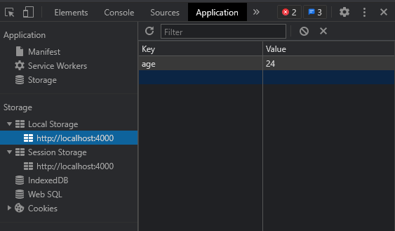

由于HTTP的无状态性，Web开发中最基本的维护页面状态的手段就是Cookie和Session，其中Cookie存在前端，Session存在后端。
Chrome开发者工具的Application中除了Cookie之外还有其他几种存储：
- LocalStorage
- SessionStorage
- IndexedDB
- Web SQL
Cookie
Cookie存储在浏览器本地，每个域对应同一个Cookie。Cookie可以由前端用document.cookie对象获得：console.log(document.cookie) // "id:114514"
给document.cookie赋值可以新增或修改本域下已有的Cookie：document.cookie = "role: vip"
console.log(document.cookie) // "id:114514; role:vip"
请求本域的资源的时候HTTP头部会带上Cookie字段：Cookie: role:vip; id:114514
前端设置的Cookie不带有过期时间，不带有过期时间的Cookie叫做会话Cookie，会话Cookie存储在内存中，在关闭当前页面的适合消失。带有过期时间的Cookie会持久化存储直到过期。
由于Cookie会在每次清求都写在Header里，当Cookie数据量过大就会影响HTTP传输的性能。加上Cookie允许的数据量存在上限，就需配合Session使用。
Session
Session的数据是存储在后端的，Session是基于Cookie来实现的。前端仍然需要存储Cookie，Cookie中不再存放具体的数据，而是一个SESSIONID，如PHP实现的框架中这个值往往是”PHPSESSIONID”，Java的Web框架中它是”JSESSIONID”。SESSIONID是一个很长的Hash串，服务器在内存中维护一个SESSIONID=>Map的数据结构。当浏览器请求资源的时候，服务器获取Cookie中的SESSIONID，拿到对应的Map，再从其中读取用户信息。
由于SESSION数据存在服务端内存中，它允许存储更多状态数据而不拖慢HTTP请求的性能。由于前端不能直接获取SESSION中的内容，它适合存储铭感的数据。
果用户禁用cookie，则要使用URL重写，可以通过response.encodeURL(url) 进行实现
LocalStorage
LocalStorage和Cookie一样，存储在浏览器本地，一个域对应一个LocalStorage，上限5M。与Cookie不同的是，它不会随着请求被提交。LocalStorage也表现为浏览器某个域下的一个KV数据集：localStorage.setItem("age",24);
console.log(localStorage.getItem("age")) //output: 24
localStorage.removeItem("age") //remove item with key "age"

SessionStorage
SessionStorage也和LocalStorage一样，存储在本地，每个域上限5M，且不随着请求被提交。它和LocalStorage的唯一区别是：SessionStorage不支持跨标签页，一旦标签页被关闭，这个页面会话的SessionStorage就会被清空。所以SessionStorage可以被用于无痕模式浏览。
sessionStorage.setItem("age",24); |
如果一个标签页包含多个iframe标签且他们属于同源页面，那么他们之间是可以共享sessionStorage的
Web SQL
Web SQL是基于Sqlite的Web关系型数据库。Web SQL标准不再维护，只有少量浏览器（如Chrome）支持Web SQL。
- 每个域最大5M空间
- 支持事务
- 异步IO
使用openDatabase()创建一个名称为person的数据库，数据库版本为1。第三个参数是数据库的描述，最后一个参数是最大存储空间，由于Chrome中默认最大存储空间都是5M，直接给0。db = openDatabase('person',1,'this is a websql person database',0)
创建一个student表，并插入两条数据：db.transaction(tx => {
tx.executeSql("create table if not exists student (id unique, name)");
})
db.transaction(tx => {
tx.executeSql("insert into student (id, name) values (?,?)", [1,"thankod"]);
tx.executeSql("insert into student (id, name) values (?,?)", [2,"xuranus"]);
})
浏览器中查看：
执行查询：db.transaction(tx => {
tx.executeSql("select * from student", [], (tx, res) => {
let rows = res.rows;
let len = rows.length;
for(var i = 0; i < len; i++) {
console.log(rows.item(i))
}
})
})
输出：{id:1, name:"thankod"}
{id:2, name:"xuranus}
执行删除：db.transaction(tx => {
tx.executeSql("delete from student where id = ?",[1]);
})
IndexedDB
LocalStorage存储上限5M，而要存更多数据就要用IndexedDB。IndexedDB是浏览器本地存储的K-V数据集。具有如下特性：
- 最大允许每个域50M存储（移动端25M）
- 异步IO
- 支持事务
- 支持二进制数据（Blob）存储
创建一个到数据库db1的连接：var db;
var request = window.indexedDB.open("db1",1);
// bind onsuccess event
request.onsuccess = (e) => {
db = request.result;
console.log("db open success")
}
新建一张person表，主键名称id：// bind onupgradeneeded event and create
request.onupgradeneeded = (e) => {
db = e.target.result;
var objectStore;
if(!db.objectStoreNames.contains('person')) {
objectStore = db.createObjectStore('person',{keyPath:'id'});
}
console.log('table person create succeed')
}
IndexedDB所有Schema变动的操作都需要绑定onupgradeneeded。接下来插入数据：db.transaction(['person'], 'readwrite')
.objectStore('person')
.add({id: 1, name: 'thankod', age: 24})
db.transaction(['person'], 'readwrite')
.objectStore('person')
.add({id: 2, name: 'xuranus', age: 24})
在浏览器看结果如下：
修改数据：//change age to 23, name to whoisnian
db.transaction(['person'], 'readwrite')
.objectStore('person')
.put({id: 2, name: 'whoisnian', age: 23})
删除数据：// delete data with key {id:1}
db.transaction(['person'], 'readwrite')
.objectStore('person')
.delete(1)
查询数据：var request2 = db.transaction(['person'], 'readwrite')
.objectStore('person')
.get(2)
request2.onsuccess = (e) => {
console.log(request2.result)
}
// output: {id: 2, name: "whoisnian", age: 23}
IndexedDB原生的API很难用，可以使用第三方封装Dexie，官网：dexie.org
引入CDN：<script src="https://unpkg.com/dexie@latest/dist/dexie.js"></script>
使用Dexie操作IndexedDB//create a database db1
var db = new Dexie("db1");
//create table person
// with auto_increment primary key (id),
// and column name and age
db.version(1).stores({person: "++id,name,age"})
创建的person数据库中拥有一个自增的主键id，带有索引的两个列name,age（这不意味着就不能插入其他字段了）。用Dexie插入数据：db.person.add({name: 'thankod', age: 24})
ab.person.add({name: 'xuranus', age: 24})
根据主键获取数据：await db.person.get(1)
// {id:1, name:'thankod', age:24}
条件查询：await db.person.where('age').above(20).toArray()
// {id:1, name:'thankod', age:24}
// {id:2, name:'xuranus', age:24}
修改数据使用put，需要带有主键：// modify data field "name"
// from 'xuranus' to 'whoisnian'
// with primary key "id" = 1
db.person.put({id:1, name:'whoisnian'})
关闭数据库：db.close()
归纳
这几种前端存储的共性个性总结如下：
| Cookie | LocalStorage | SessionStorage | IndexedDB | WebSQL | Session | |
| 存储特性 | K-V数据集 | 关系型数据库 | K-V数据集 | |||
| 存储位置 | 客户端 | 服务端 | ||||
| 特性 | 随请求头每次提交 | 长时保存，不随请求头提交 | 页面关闭清空，不随请求头提交 | 本地大容量缓存解决方案 | 关系型数据库，支持SQL语句 | 存储在服务器内存中，安全 |
| 作用域 | 可跨页，不可跨域 | 不可跨页，不可跨域 | 可跨页，不可跨域 | |||
| 最大容量 | 4K | 5M | 移动端25M，客户端50M | 5M | 视服务器内存而定 | |
| 支持事务 | 不支持 | 支持 | 不支持 | |||
参考资料：